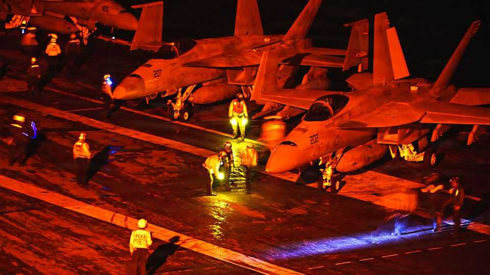

Politics

Sep 3rd 2026
Fighting broke out between America and Iran in the countries’ biggest exchange of fire in over a month. America struck Iranian air defences, radar installations, shipping and mine-laying facilities. Iran targeted American bases in Bahrain, Iraq, Jordan and Kuwait. Several oil tankers in the Strait of Hormuz were attacked, one of which was sailing a route close to the coast of Oman, a maritime course that America has said is under its protection. Oil prices jumped. Meanwhile, reports suggested that an American naval blockade has successfully cut off Iranian exports of crude oil through the strait to China, Iran’s biggest customer. China still has access to oil stocked on ships in Asia.
On a visit to Egypt Xi Jinping called for a new security apparatus for the Middle East, and said that China was ready to help protect strategic shipping routes in the region. China is helping build Egypt’s new administrative capital and is a big investor in the ports and industrial areas that line the Suez canal.
The Pacific Islands Forum held its annual summit, which this year took place in Palau. Palau is one of only a dozen countries to have diplomatic relations with Taiwan, which was invited to the summit, to China’s fury. Its officials accused “independence separatists” of making “sneaky visits” abroad, bringing “disgrace” to their hosts. Palau’s president told China, diplomatically, to mind its own business. During the meeting Australia pledged A$600m ($430m) and America promised $150m for several security measures. New Zealand said that, with America, it would finance the refurbishment of a strategic port in the Cook Islands. The three countries are seeking to limit China’s clout in the region.
The death toll from flash flooding on the border of Nepal and Tibet passed 1,000, with more than 4,000 people still missing. China at last cleared the road leading to the Gyirong border crossing, enabling the deployment of heavy machinery to the devastated area. The flooding was triggered by a partial glacier collapse in the Himalayas.
Venezuela’s legislature backed Donald Trump’s deal creating a private joint venture that gives America preferential access to more than 65bn barrels of proven oil reserves, a fifth of Venezuela’s total. The American government said the agreement would bring $100bn in private investment to Venezuela; Mr Trump believes the pact will lower petrol prices for Americans. The details were hazy, especially on the involvement of America’s big oil companies.
Mr Trump criticised the growing number of local communities in America that are opposed to building data centres, saying they would end up “backwards and poor”. That didn’t stop California’s state legislature from passing several bills imposing new regulations on data centres, including environmental-impact reviews and requirements to report electricity and water usage to state agencies. Gavin Newsom, the Democratic governor, vetoed a water-disclosure bill last year, but now, as he contemplates running for president, says he is “leaning in” to the idea.
A 23-year-old man pleaded not guilty to the murder of Charlie Kirk, a conservative activist. The judge overseeing the case in Utah allowed the prosecution to seek the death penalty because of aggravating factors, such as the defendant shooting into a crowd at the college where Kirk was holding an event a year ago. A trial is still months away.
Dan Driscoll resigned as secretary of the army amid a clash with Pete Hegseth, the secretary of war, over the sacking of senior commanders. In April Mr Hegseth fired several top-ranking officers, including General Randy George as army chief of staff, in part because of disagreements over a restructuring of the service that was supported by Mr Driscoll. Mr Hegseth’s wider purge of the top brass has even got Mr Trump concerned, according to reports.
The USS Abraham Lincoln docked in Thailand after spending 286 consecutive days at sea, thought to be a record for not berthing in port in the US navy’s modern era. The aircraft-carrier was deployed last November. The 5,000 sailors and marines on board will get a well-deserved break in Thailand. Reports surfaced earlier this year about the mental stress that some personnel were under because of the long voyage.

Iceland held a referendum on whether to reopen talks on joining the European Union. Voters rejected the proposal by 53% to 47%; only Reykjavik, the capital, voted in favour. Turnout was nearly 83%. Supporters of the measure put trade and Arctic security at the centre of their campaign, but that was not enough to overcome concerns that Iceland’s fishing industry would be put in jeopardy by joining the bloc.
A ferry en route from northern Cyprus to Turkey capsized in rough seas, killing at least eight people. Another 20 are missing. There were 267 passengers and crew aboard the vessel.
Germany blamed Russia for a drone attack on Leipzig airport in early August. The drone didn’t explode, but a cargo plane hit a second drone, suffering no damage. A third drone was reportedly found in the area ten days later. NATO and the EU backed Germany’s claims. The German government announced a series of modest measures to enhance security, including stricter border controls for Russian nationals.
Russia’s slaughter continued in Ukraine, as it launched waves of missiles and drones targeting Kyiv, killing 12 people in one attack alone. It also hit a printing press that was gearing up to issue textbooks for the new school term. Russia has been targeting printing presses and publishers in an effort to stifle Ukrainian culture, destroying some 12m books.
European officials complained about the presence of Russia’s finance minister at a meeting of G20 finance ministers in Asheville, North Carolina. It was the first time Anton Siluanov physically attended a G20 meeting since Russia’s invasion of Ukraine in 2022. He was invited by the US Treasury in a spirit of co-operation.
King Haakon took the oath as Norway’s new monarch, following the death of his father, Harald, aged 89. King Harald had been on the throne since 1991. Before that he had been an Olympic sportsman, representing Norway in sailing at three games. The monarchy enjoys widespread support in Norway; about three-quarters of Norwegians want it to continue.
In London, King Charles and Emmanuel Macron inaugurated the Bayeux tapestry exhibition at the British Museum, days before it goes on public display. The tapestry was embroidered in England more than 900 years ago and illustrates the epochal events of the Norman invasion and Battle of Hastings, where King Harold, the last Anglo-Saxon monarch, was killed by an arrow to the eye, or so the tapestry depicts. It has been kept in France for centuries, but the French government announced the loan in 2018, two years after Brexit.